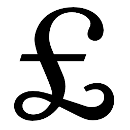

No, eBay: it isn’t “free to sell”

In October 2024, the UK division of on-line auction site eBay made a big announcement that it would no longer charge fees to private sellers. It would be “free to sell” on eBay. This was a (mostly) true claim until February 2025, when eBay started charging fees to buyers instead. While superficially it looks as if buyers will bear eBay’s costs, in reality the burden will continue to fall mostly on sellers, but in a less transparent way.
Of course, eBay isn’t a charity. Somebody, either the buyer, or the seller, or both, has to pay to run eBay. The problem is that eBay persists in saying that it’s “free to sell” when, in fact, it isn’t. For some sales, the seller will end up getting less of the value of the item than before.
Let me explain why.
Suppose I put an item up for auction, and it sells for £10. Under eBay’s earlier fee structure, eBay would have taken about 10% in fees on this final value: £1.
With the new, so-called ‘buyer protection’ fee arrangement, the buyer pays fees of 4% of the final bid, plus 75p. But this fee is concealed from the buyer when bidding on an item: if the item previously sold for £10 then, all other things being equal, it will still sell for £10, because that’s the price that the bidding user will see. But the seller will get only £8.85, because the price paid by the winning bidder included eBay’s fees which amount, in this particular case, to £1.15.
So, as the seller, I’m effectively paying eBay about the same amount under the new fee structure as I did under the old one. The exact amount I pay will depend on the value of the item, as the new fee structure includes a fixed element of 75p, while the old one did not. This fixed fee element will have a greater impact on low-value items.
Fixed-price sales will also incur a loss to the seller, not the buyer, but here it’s even less transparent.
Suppose I sell an item for a fixed price of £2, this being what I’ve learned buyers are willing to pay. With eBay’s earlier fee structure, I would again have paid fees of about 10% on the sale price – 20p in this case.
With the new fee scheme, if I list the item for sale at £2, eBay will actually charge the buyer £2.83 – that’s my £2, plus eBay’s 4% + 75p. If the buyer made the purchase at that price then it’s true that I wouldn’t be paying to sell: I would receive the full £2 I listed the item for, and the buyer will have paid a bit more. But I won’t make the sale. I know from experience that £2 is what buyers will pay for this specific item.
The only way I will sell the item is to reduce my price such that the amount eBay charges the buyer is the one I think the buyer is willing to pay. If I believe that buyers are willing to pay £2, then I would have to list my item for £1.20. Then eBay’s fees would lead to the buyer seeing a sale price of £2, of which 80p will be eBay’s fees. So an item I could previously have sold for £2, and paid 20p in fees, I now sell for £1.20. eBay is right, in a way – I haven’t been charged fees as such. But eBay’s fees have the effect that I end up making only £1.60 on an item on which I would previously have made £1.80.
It isn’t just these fees –transparent or not – that create a selling
cost for private sellers. For example, eBay will always allow buyers to
return items they don’t want, for any reason or no reason at all, with
the seller covering the cost of return postage. There’s no way
a seller can decline to accept returns, even where it would be perfectly
legal to do so:
eBay now retains the seller’s income for a period of time, to make it
easier for them to enact this policy.
In short, when eBay says it’s “free to sell”, they are lying. Sellers still pay eBay’s costs, but in a way that is now non-transparent. eBay’s previous fees were ruinously high, but at least eBay was up-front about them.
Despite all this, eBay reports a large increase in private sales under the new fee policy. Whether this increase will persist isn’t clear; frankly, it isn’t even clear to me why eBay has any private sellers at all, given how shabbily it treats them.
It’s possible that part (all?) of the claimed increase in private sales is from that time between the removal of selling fees and the introduction of fees for buyers. eBay users might have started selling under what were, for that short time, quite generous terms. It’s also possible that inexperienced eBay users, who may have no particular idea of the price that items typically sell for, might not even realize how much they’re paying to sell on eBay.
In short, it’s not “free to sell” privately on eBay, and eBay’s claim that it is, is a deception. eBay will continue to take money from sellers as they always have, just less directly.